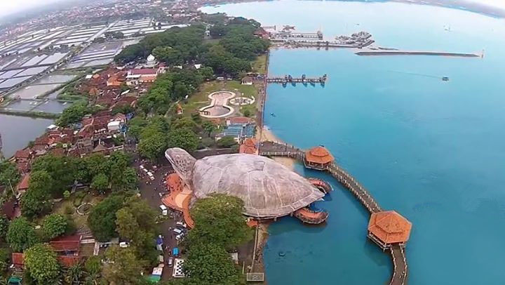

Pantai Kartini

Pantai Kartini adalah objek wisata pantai di Bulu, Jepara, Jawa Tengah. Pantai ini terletak 2,5 km arah barat dari pendopo Kantor Bupati Jepara. Kawasan dengan luas lahan 3,5 ha ini merupakan kawasan yang strategis, karena sebagai jalur transportasi laut menuju objek wisata Taman laut Nasional Karimunjawa dan Pulau Panjang. Selain itu Pantai Kartini, tidak bisa lepas dari suatu acara tradisional yang disebut “Lomban”. Acara ini merupakan acara budaya masyarakat Jepara yang berlangsung selama 1 hari tepatnya pada tanggal 8 Syawal atau seminggu setelah Hari Raya Idul Fitri. Pantai Kartini disebut juga "Pemandian" yang terletak di bagian barat Pantai Kartini, karena pada awalnya digunakan sebagai pemandian yang dipercayai masyarakat dapat menyembuhkan penyakit rematik, gatal-gatal.